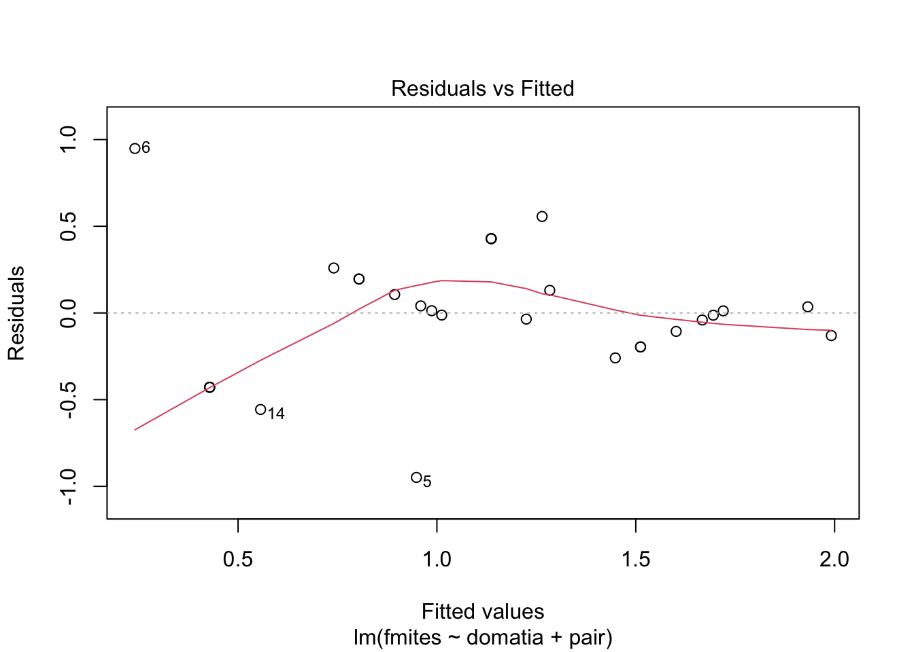
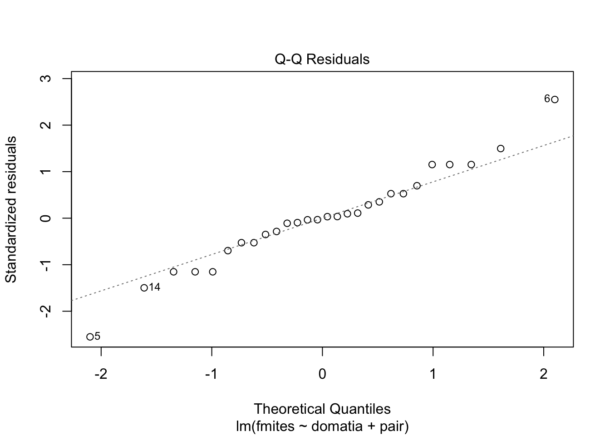
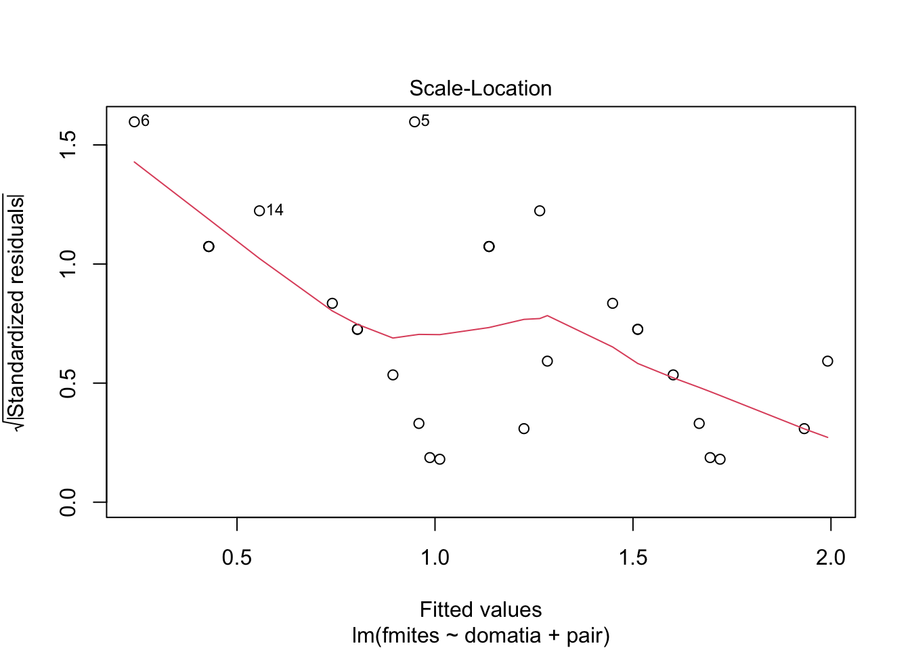
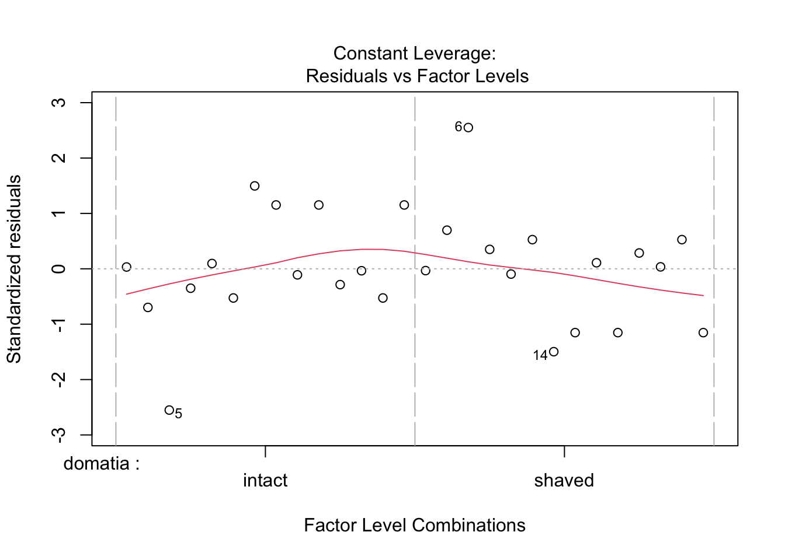
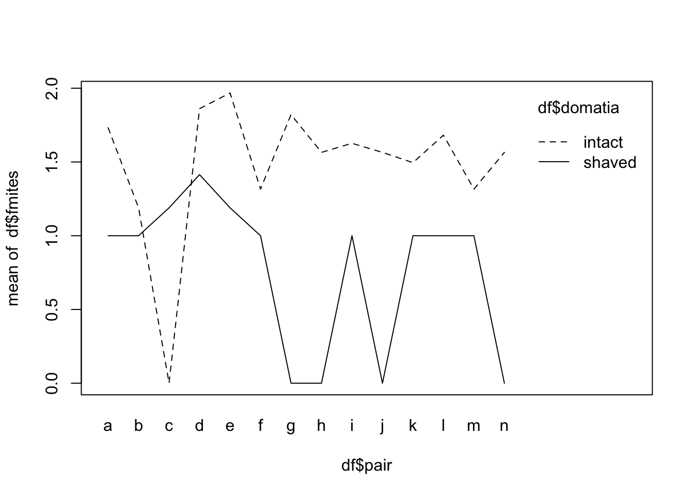

The aim of these exercises is to start getting familiar with mixed models, and in these exercises we’ll be focused on models with multiple categorical predictors, with at least one predictor a random effect. The random effects can be crossed or be nested within other predictors, creating a nested or multilevel structure.
For each of the examples below, you should follow the sequence we’ve used previously:
What is the biological question?
Is the predictor continuous or categorical?
Write out the linear model corresponding to this question.
What distribution do you expect the response variable to follow?
What are the assumptions behind the statistical model you’ll fit?
Fit the model
How will you assess whether the model fits well?
Can you detect an effect of the predictor?
How do you measure the effect?
What do you conclude (including any cautions)
In fitting these models, we’ll need to make the initial checklist more complex:
as well as classifying a predictor as continuous or categorical, think clearly about whether it is random or fixed
think about the relationship between predictors - are they crossed (factorial) or nested (hierarchical)? Make sure that your linear model reflects these relationships!
When there are random effects, assumptions can be more extensive. We’re usually interested in the fixed effects, and different fixed effects can have different assumptions. This is particularly the case with nested designs.
Remember from Chapter 10 that these designs are typically used for two purposes.
Random effects are often used as to reduce background noise in the data (e.g. randomized blocks designs), where the random effect is of little intrinsic interest. In a sense, we sacrfice degrees of freedom from the residual variance, anticipating that the variance attributed to the random effects will be large enough to make this sacrifice worthwhile. When you see these designs, it’s a good idea to look and see if the use of a random effect seems a good decision, e.g. by looking at blocking efficiency.
In other cases, the random effects are used to estimate how consistently fixed effects act, by estimating variance in their effects across, for example, an environmental spectrum.
A. @walterLeavesDomatiaHave1992 were interested in testing the hypothesis that leaves of the shrub Viburnum tinus with domatia (small shelters at the juncture of veins on leaves) have more mites than leaves without domatia. Fourteen paired leaves on a shrub of V. tinus were randomly chosen and one leaf in each pair had its domatia shaved while the other remained as a control; the number of mites was recorded on each leaf (experimental unit) after two weeks.
The data file is here: walter.csv.
df <- read.csv("data/walter.csv")
df## leaf pair domatia mites
## 1 a1 a intact 9
## 2 a2 a shaved 1
## 3 b1 b intact 2
## 4 b2 b shaved 1
## 5 c1 c intact 0
## 6 c2 c shaved 2
## 7 d1 d intact 12
## 8 d2 d shaved 4
## 9 e1 e intact 15
## 10 e2 e shaved 2
## 11 f1 f intact 3
## 12 f2 f shaved 1
## 13 g1 g intact 11
## 14 g2 g shaved 0
## 15 h1 h intact 6
## 16 h2 h shaved 0
## 17 i1 i intact 7
## 18 i2 i shaved 1
## 19 j1 j intact 6
## 20 j2 j shaved 0
## 21 k1 k intact 5
## 22 k2 k shaved 1
## 23 l1 l intact 8
## 24 l2 l shaved 1
## 25 m1 m intact 3
## 26 m2 m shaved 1
## 27 n1 n intact 6
## 28 n2 n shaved 0</div>This file has four variables:
leaf is just a code to identify individual leaves
pair identifies the pair to which that leaf belongs
domatia describes the experimental treatments, whether domatia were shaved off or left intact
mites is the number of mites recorded from that leaf
Use the sequence at the start of these exercises to make some conclusions about the role of domatia on this shrub species.
Why do you think the authors chose to run the experiment with pairs of leaves?
Did that pairing decision improve their ability to say something about domatia?
df$fmites <- df$mites^.25 #Transform to make variances more similar; use fourth root because of zeroes
walter.lm <- lm(fmites ~ domatia + pair, data = df)
plot(walter.lm)
anova(walter.lm)## Analysis of Variance Table
##
## Response: fmites
## Df Sum Sq Mean Sq F value Pr(>F)
## domatia 1 3.5075 3.5075 11.7749 0.004464 **
## pair 13 2.6121 0.2009 0.6745 0.756191
## Residuals 13 3.8725 0.2979
## ---
## Signif. codes: 0 '***' 0.001 '**' 0.01 '*' 0.05 '.' 0.1 ' ' 1interaction.plot(df$pair,df$domatia,df$fmites)
walter.vca <- anovaMM(fmites~domatia+(pair), df)## Convert variable pair from "character" to "factor"!## Convert variable domatia from "character" to "factor"!walter.vca##
##
## ANOVA-Type Estimation of Mixed Model:
## --------------------------------------
##
## [Fixed Effects]
##
## int domatiaintact domatiashaved
## 0.770902 0.707865 0.000000
##
##
## [Variance Components]
##
## Name DF SS MS VC %Total SD CV[%]
## 1 total 26 0.297881 100 0.545785 48.521349
## 2 pair 13 2.612131 0.200933 0* 0* 0* 0*
## 3 error 13 3.872455 0.297881 0.297881 100 0.545785 48.521349
##
## Mean: 1.124834 (N = 28)
##
## Experimental Design: balanced | Method: ANOVA | * VC set to 0 | adapted MS used for total DFVCAinference(walter.vca, alpha=0.05, VarVC=TRUE, excludeNeg=FALSE, constrainCI=FALSE)##
##
##
## Inference from Mixed Model Fit
## ------------------------------
##
## > VCA Result:
## -------------
##
## [Fixed Effects]
##
## int domatiaintact domatiashaved
## 0.7709 0.7079 0.0000
##
##
## [Variance Components]
##
## Name DF SS MS VC %Total SD CV[%] Var(VC)
## 1 total 26 0.2979 100 0.5458 48.5213
## 2 pair 13 2.6121 0.2009 0* 0* 0* 0* 0.005
## 3 error 13 3.8725 0.2979 0.2979 100 0.5458 48.5213 0.0137
##
## Mean: 1.1248 (N = 28)
##
## Experimental Design: balanced | Method: ANOVA | * VC set to 0 | adapted MS used for total DF
##
##
## > VC:
## -----
## Estimate CI LCL CI UCL One-Sided LCL One-Sided UCL
## total 0.2979 0.1847 0.5594 0.1992 0.5036
## pair 0 0* 0.1381 0* 0.1159
## error 0.2979 0.1566 0.7731 0.1732 0.6573
##
## > SD:
## -----
## Estimate CI LCL CI UCL One-Sided LCL One-Sided UCL
## total 0.5458 0.4298 0.748 0.4463 0.7096
## pair 0 0* 0.3716 0* 0.3405
## error 0.5458 0.3957 0.8793 0.4161 0.8107
##
## > CV[%]:
## --------
## Estimate CI LCL CI UCL One-Sided LCL One-Sided UCL
## total 48.5213 38.2114 66.4952 39.676 63.0889
## pair 0 0* 33.0392 0* 30.267
## error 48.5213 35.1757 78.17 36.9955 72.0739
##
##
## 95% Confidence Level | * CI-limits constrained to be >= 0
## SAS PROC MIXED method used for computing CIswalter2.lm <- lm(fmites ~ domatia, data = df)
anova(walter2.lm)## Analysis of Variance Table
##
## Response: fmites
## Df Sum Sq Mean Sq F value Pr(>F)
## domatia 1 3.5075 3.5075 14.063 0.000894 ***
## Residuals 26 6.4846 0.2494
## ---
## Signif. codes: 0 '***' 0.001 '**' 0.01 '*' 0.05 '.' 0.1 ' ' 1anova(walter.lm, walter2.lm)## Analysis of Variance Table
##
## Model 1: fmites ~ domatia + pair
## Model 2: fmites ~ domatia
## Res.Df RSS Df Sum of Sq F Pr(>F)
## 1 13 3.8725
## 2 26 6.4846 -13 -2.6121 0.6745 0.7562Didiano, Johnson, and Duval (2016)
Highfill et al. (2019)
C. Birceanu and Wilkie (2018)
D. Cramp et al. (2014)